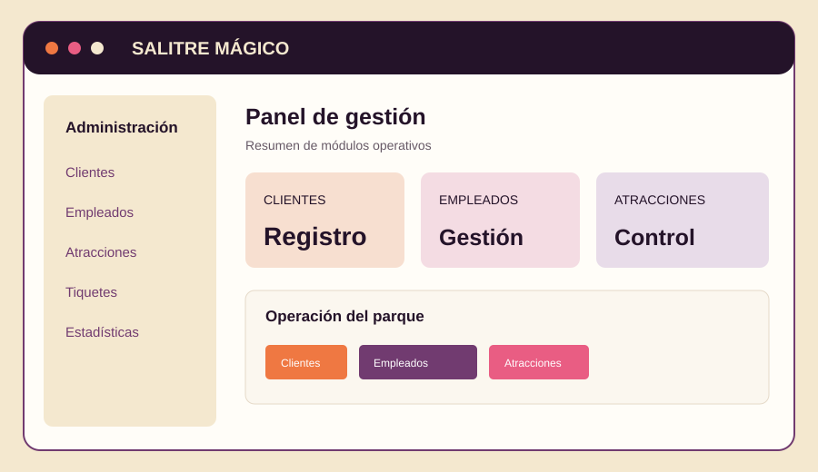
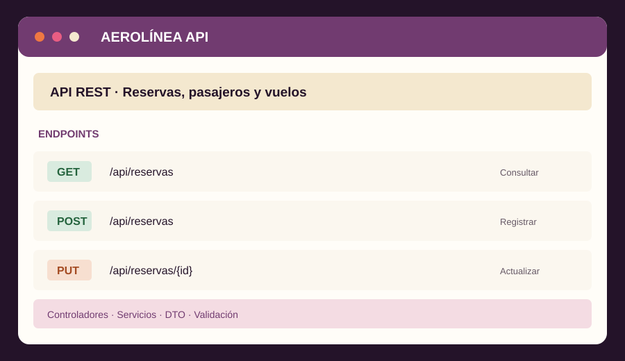

Backend
Java · Spring Boot · Spring Data JPA · Hibernate · JavaScript
Desarrolladora Backend Junior
Construyo soluciones backend y APIs. Combino mi formación en desarrollo de software con experiencia en operación y soporte de sistemas productivos.
Bogotá, Colombia · Disponible para oportunidades junior

01 / PERFIL
Me interesa crear software útil, comprensible y mantenible.
Soy desarrolladora backend junior, graduada de Ingeniería de Sistemas. Tengo experiencia en operación de sistemas empresariales, monitoreo de servicios críticos y gestión de incidencias en entornos productivos. Actualmente enfoco mi desarrollo profesional en Java, Spring Boot, bases de datos y construcción de APIs REST.
Conecta conmigo en LinkedIn ↗02 / HERRAMIENTAS
Tecnologías que he utilizado durante mi formación y en proyectos personales.
Java · Spring Boot · Spring Data JPA · Hibernate · JavaScript
PostgreSQL · MySQL · SQL
JUnit · Mockito · Postman
Git · GitHub · Maven · Gradle · Jira · Bash básico
03 / TRABAJO SELECCIONADO
Una selección de proyectos y contribuciones.

Vista ilustrativaSistema web para apoyar la gestión operativa de un parque de diversiones, con módulos para clientes, empleados, atracciones y tiquetes. Proyecto en desarrollo.
Ver repositorio ↗
Vista ilustrativaAPI REST para gestionar reservas, pasajeros y vuelos. Incluye controladores, servicios, DTO, validaciones y persistencia relacional.
Ver repositorio ↗ Recurso visual del proyecto
Recurso visual del proyecto
Mi contribución fue el desarrollo de la lógica del servidor con JavaScript y la integración con la API Astronomy Picture of the Day de NASA.
Ver repositorio ↗Las vistas ilustrativas no son capturas de pantalla del producto. Los enlaces llevan a los repositorios.
04 / TRAYECTORIA
INETUM · BOGOTÁ, COLOMBIA
Monitoreo de servicios críticos en ambientes productivos, gestión y escalamiento de incidencias, seguimiento de tareas programadas y soporte a la continuidad operativa. Uso de herramientas de gestión como BMC Helix y Jira.
05 / FORMACIÓN
PROGRAMA DE FORMACIÓN
Generation Colombia
Mar 2026 — Jun 2026TÍTULO PROFESIONAL
Universidad de Cartagena
Feb 2018 — Mar 2024CURSOS Y CERTIFICACIONES
Formación complementaria.
Agregar enlaces o entidades emisoras cuando se documenten las credenciales.
06 / HABLEMOS